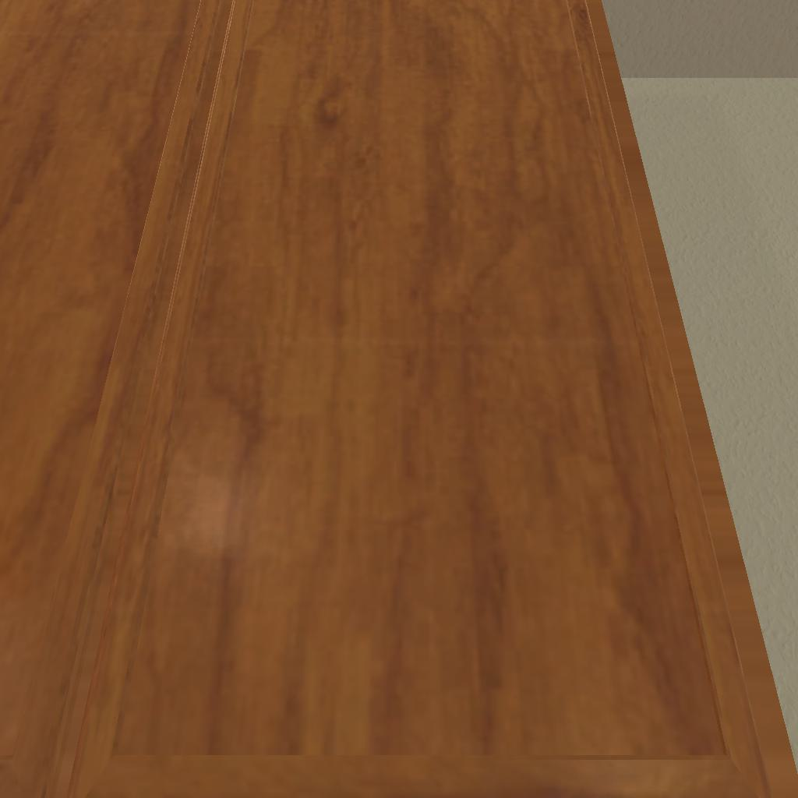

---------------------------------------------------------task: 17---------------------------------------------------------
--------------------------------------------------------------------------------------------------------------------------------------------------------------------
--------------------------------------------------------------------------------------------------------------------------------------------------------------------
Step:--------------------------------------------------------------------------12-------------------------------------------------------------------------------
----------------------------------------
VLM Prompt:
Image1:
Image2:
**Instruction**
1. Analyze the provided images to identify all visible household objects and compare the difference between images (e.h. whether the object is opened or not and taken on hand or not), focusing on those relevant to the task description "put a cool pan in stoveburner."
2. Use the analysis of images and the task hint "The agent must find an object of the desired type, pick it up, go to a fridge, cool the object with the fridge, then find the correct location to place it, and put it down there. The agent does not need to use the fridge button or open the fridge to cool the object, and the agent just needs to do action that is "cool the object with the fridge"." to answer the question: what is the most reasonable action in the choices for the task description "put a cool pan in stoveburner"?
3. Decide and write the answer using the template: The answer is: (i): , where i is the real number. If there is no desired object in images, search every place based on **Initial Observation** to find the object. And if no one is exactly correct, choose a similar answer.
**Initial Observation**
You are in the middle of a room. Looking quickly around you, you can see cabinet (1-14), countertop (1-2), microwave (1), drawer (1-5), sink (1), sinkbasin (1), coffeemachine (1), stoveburner (1-4), toaster (1), fridge (1), diningtable (1), garbagecan (1), safe (1)
**Answer Choices**
(1): go to cabinet 3
(2): go to countertop 1
(3): go to cabinet 4
(4): go to cabinet 5
(5): go to microwave 1
(6): go to cabinet 6
(7): go to drawer 1
(8): go to drawer 2
(9): go to drawer 3
(10): go to cabinet 7
(11): go to cabinet 8
(12): go to sink 1
(13): go to sinkbasin 1
(14): go to coffeemachine 1
(15): go to cabinet 9
(16): go to cabinet 10
(17): go to drawer 4
(18): go to cabinet 11
(19): go to stoveburner 1
(20): go to stoveburner 2
(21): go to stoveburner 3
(22): go to stoveburner 4
(23): go to cabinet 12
(24): go to toaster 1
(25): go to drawer 5
(26): go to countertop 2
(27): go to fridge 1
(28): go to cabinet 13
(29): go to cabinet 14
(30): go to diningtable 1
(31): go to garbagecan 1
(32): go to safe 1
(33): open cabinet 2
(34): close cabinet 2
(35): examine cabinet 2
**Answer**
Let's think step by step by following the instructions.
----------------------------------------
----------------------------------------
Original Response:
The provided images show what appears to be a wooden cabinet or drawer without any visible handles, and there is no clear difference between Image 1 and Image 2. There are no household objects visible in either of the images that would be relevant to the task description "put a cool pan in stoveburner."
Based on the task hint, the agent must find an object of the desired type (a pan), pick it up, go to a fridge to cool the object, then find the correct location (a stoveburner) to place it and put it down there. Since the images do not show any pans or stoveburners, we must rely on the Initial Observation to decide on the most reasonable action.
Given that the agent does not need to use the fridge button or open the fridge to cool the object, and the task is to put a cool pan in a stoveburner, the most reasonable action would be to first find a pan. Pans are typically stored in cabinets or drawers near the stove. The Initial Observation lists multiple cabinets and drawers, so the agent should check these locations.
The answer is: (7): go to drawer 1. This is the most reasonable first action to find a pan, as drawers are a common storage place for pans in a household kitchen. If the pan is not found in drawer 1, the agent can continue searching the other cabinets and drawers listed in the Initial Observation.
----------------------------------------
----------------------------------------
>>> Refine Original VLM Response and Get Pure Action: go to drawer 1
----------------------------------------
-----------------------------------------------------------------
Running time: 11.841762781143188 seconds
Total Money: 8.330610000000002
-----------------------------------------------------------------
-----------------------------------------------------------------
Text Observation:You arrive at loc 8. The drawer 1 is closed.
-----------------------------------------------------------------
UNSUCCEED